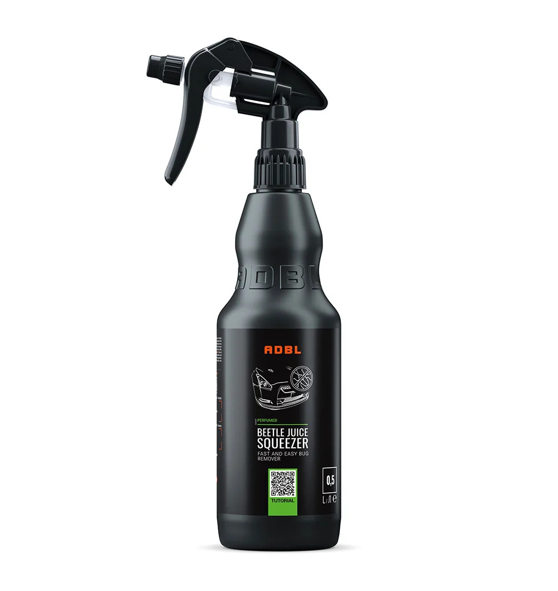
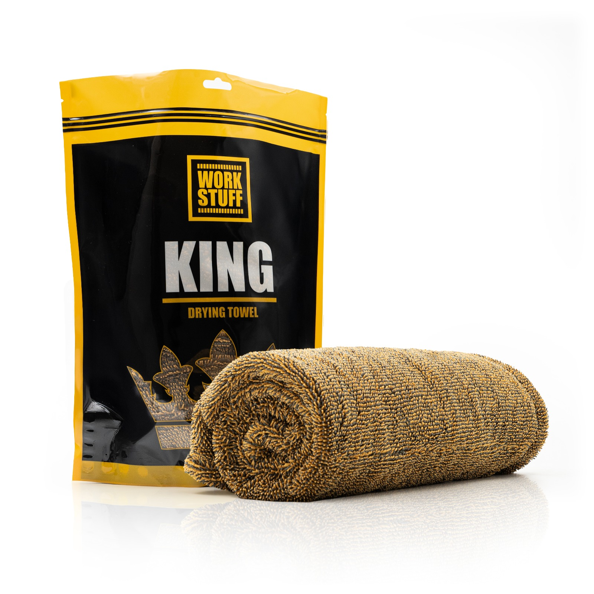

Klucz Milwaukee M18 ONEFHIWF12-502X

Wysokoobrotowy klucz udarowy M18 FUEL™ z technologią ONE-KEY™ zapewnia moment obrotowy 1356 Nm.
3 499,99 PLN
Zobacz Szczegóły
Wysokoobrotowy klucz udarowy M18 FUEL™ z technologią ONE-KEY™ zapewnia moment obrotowy 1356 Nm.
3 499,99 PLN
Zobacz Szczegóły
ADBL Beetle Juice Squeezer to szybko działający preparat do bezpiecznego usuwania uporczywych pozostałości po owadach, soków z drzew i ptasich odchodów z lakieru oraz elementów karoserii.
23,99 PLN

KING Drying Towel 1100 GSM to gruby, niezwykle chłonny ręcznik mikrofibrowy o gramaturze 1100 g/m², stworzony do szybkiego i bezpiecznego osuszania lakieru samochodowego bez ryzyka powstawania zarysowań.
105,99 PLN